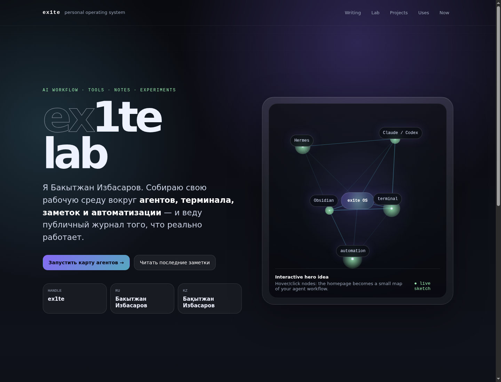
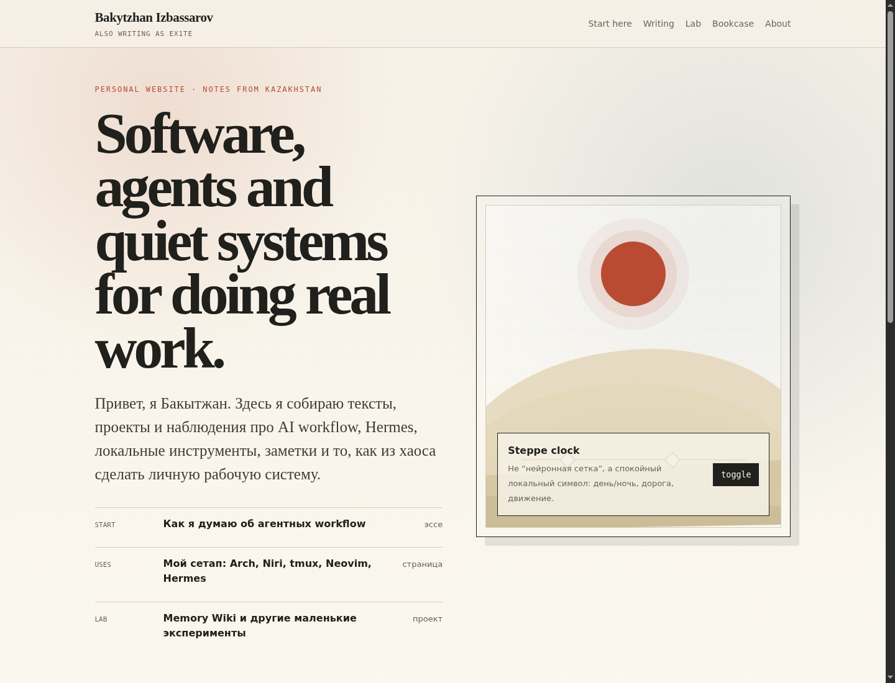
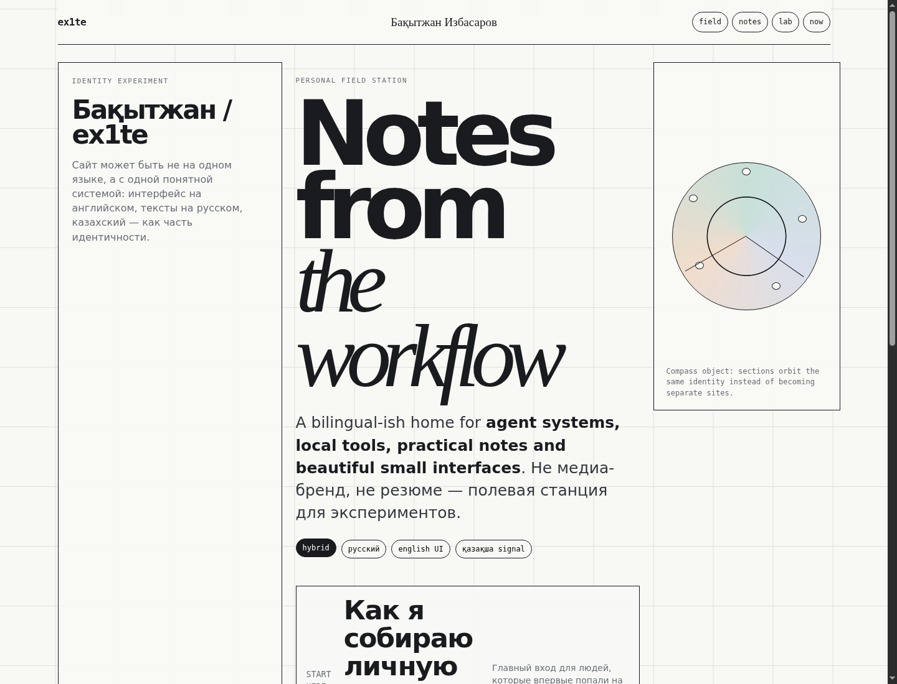
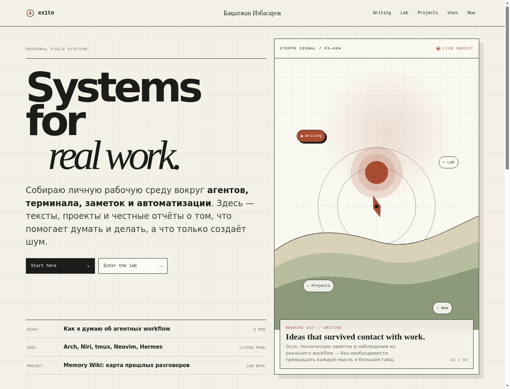

Four directions for ex1te’s personal platform.
Три независимых визуальных направления и четвёртый синтез. Каждый вариант — самостоятельный HTML-файл с живым интерактивным элементом.

001
ex1te Agent Lab
Темная личная операционная система: agent map, lab, workflow, tools.

002
Bakytzhan Editorial Steppe
Тёплый editorial archive ближе к Herman: имя, тексты, projects, steppe object.

003
Hybrid Field Station
Слоистая identity-система: ex1te, Бақытжан, RU/EN/KZ, field station.

004 · SYNTHESIS
Editorial Field Station
Текущее направление: editorial archive, identity grid и интерактивный Steppe Signal.